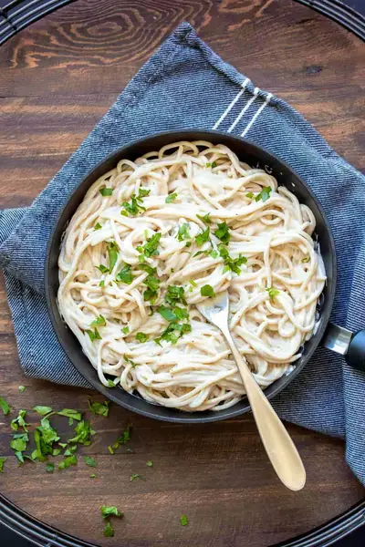

Vegan Fettuccine Alfredo Sauce

Ingredients
- 1½ cups veggie broth (you can use water but it won’t be as flavorful)
- 1 cup raw cashews (see note)
- ½ cup cooked potato (see note)
- ½ cup cooked white beans (rinsed and drained (I use great northern beans)
- 2 cloves garlic
- 1 teaspoon apple cider vinegar
- 1 teaspoon sea salt
- ¼ teaspoon ground black pepper
Steps
- Place all ingredients, except pepper, into a high speed blender. I like to pulse that in at the end. (You can soak the cashews in warm water for 20-30 minutes beforehand, it'll just make the blending process easier. This is also recommended if you don't have a high-speed blender like a Vitamix).
- Blend on high until nice and smooth. The heat from the blender will heat it up but you can also heat over the stove a little if you prefer. Heat over low because it will thicken a bit. Add more broth as needed.
- Serve over your favorite pasta or any other way you want!
Recipe by Anjali Shah, from The Picky Eater. Saved here for personal use; the original has the full notes, tips and photos. Open original